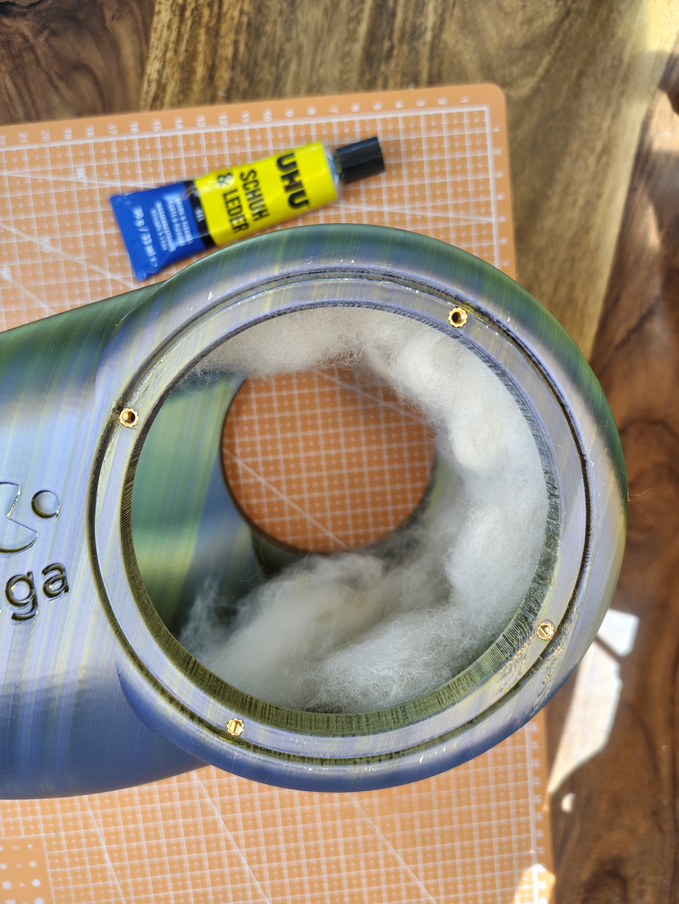
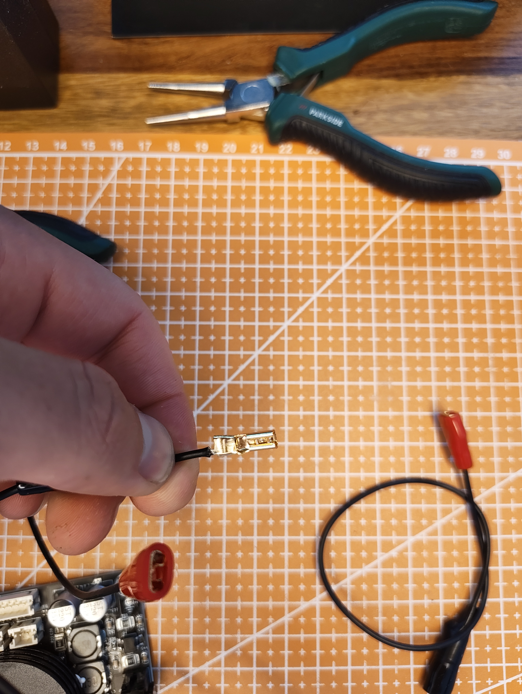
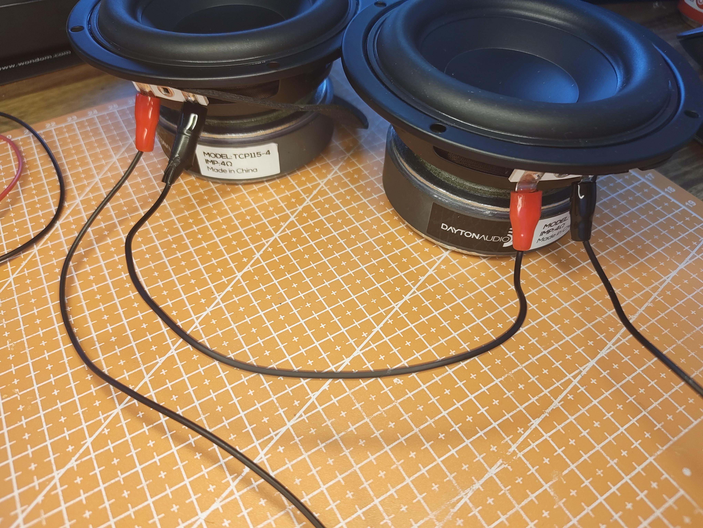
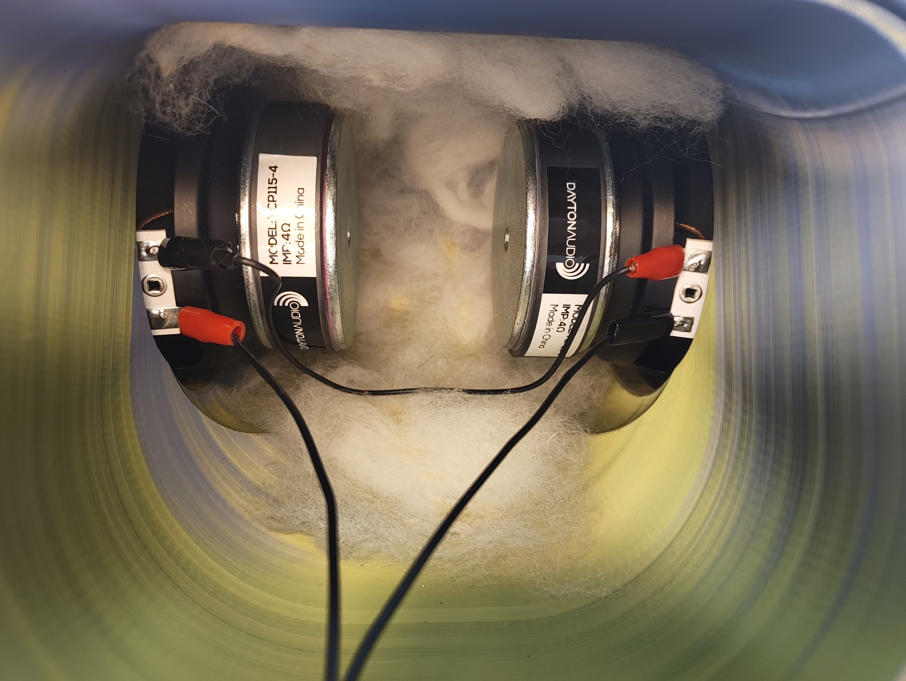
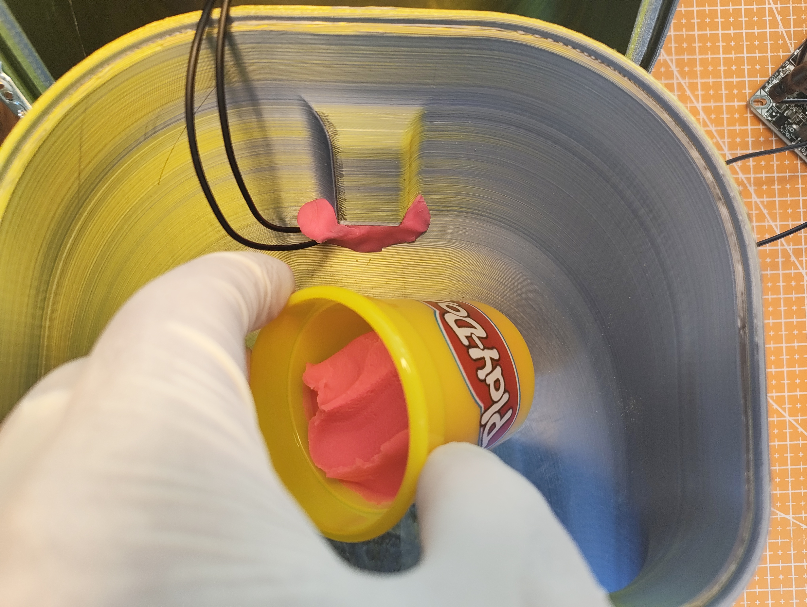
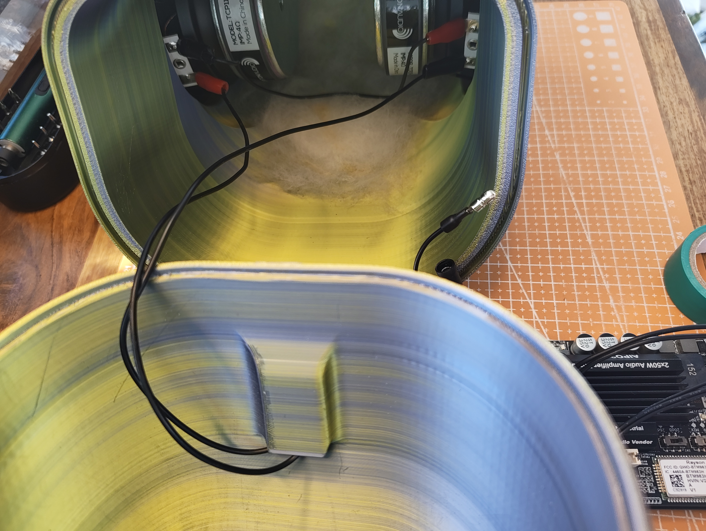

What you're building
The DMG-Beluga is a compact, 3D-printed subwoofer that completes the Nautilus desktop system. Its enclosure takes the profile of a beluga whale — a smooth, rounded body that sits naturally on a desk and visually matches the organic geometry of the Nautilus speakers. Inside, two Dayton TCP115-4 woofers face each other on opposite sides of the enclosure in a dual-opposed arrangement, wired in series, driven by a Wondom JAB2+ running in mono-bridged mode at 100 W.
The enclosure is a Helmholtz resonator with a tuning frequency of approximately 48 Hz — well-matched to the Nautilus's sealed roll-off around 140 Hz. The port geometry is defined by an 8.8 L internal volume, a 50 cm centerline path length through the port tube, and a 35 cm² opening area. A brass rotary dimmer provides a physical volume control on the body. Both the Beluga and the Nautilus connect independently to the source over Bluetooth.
The enclosure is printed in dual-color PLA — a Sunlu dual-filament with a gradient color shift that gives the body a visually unique finish without any painting or post-processing. Total print time is dominated by the body: plan on 10–14 hrs depending on your printer speed.
Why the beluga?
The beluga whale (Delphinapterus leucas) is one of the few cetaceans with a genuinely rounded, bulbous head — the melon — shaped by internal acoustic fat deposits used for bio-sonar. The beluga's profile is dominated by smooth, convex curves with no flat surfaces or abrupt angles. This makes it an apt shape for a speaker enclosure: the curved body exhibits no flat parallel panels, which are the primary source of panel resonance in loudspeaker cabinets. Every surface is in a state of continuous curvature, distributing bending stress and pushing panel resonances well above the subwoofer's operating range.
// DUAL-OPPOSED DRIVER ARCHITECTUREIn a conventional single-driver subwoofer, every bass transient produces a reactive force on the enclosure - Newton's third law applied to a speaker cone. The driver pushes air forward; the cabinet is pushed backward by an equal force. At low frequencies this is not subtle: a powerful woofer in a lightweight enclosure will visibly rock the box with every bass hit. That rocking couples into the desk surface, re-radiating as structural vibration, and degrading the overall sound-quality of the bass.
The dual-opposed architecture eliminates this. Two drivers are mounted on directly opposite faces of the enclosure, pointing in opposite directions, and wired so that when one cone moves outward (compressing the air on its outside face) the other also moves outward (expanding the air on its outside face). The internal volume sees both drivers simultaneously - they load the same air mass, moving in acoustic unison. But the external reactive forces they generate are equal, opposite, and collinear: they cancel each other exactly. The enclosure experiences no net translational force. It sits still regardless of bass level.
Wiring in series: the two drivers are connected in series, giving a combined impedance of 2 × 4 Ω = 8 Ω. The JAB2+ bridged mono output is rated into 4 Ω minimum. Parallel wiring would give 2 Ω, below the amp's rated minimum and likely to cause thermal protection trips.
// HELMHOLTZ RESONATOR PRINCIPLEA sealed box is the simplest subwoofer alignment: trap air, let the driver compress it. But sealed alignments waste efficiency — the trapped air acts as an extra spring stiffening the driver, raising its resonant frequency and requiring more power.
A Helmholtz resonator — the acoustic equivalent of blowing across the mouth of a bottle — uses a tuned port to recover this efficiency. The port is a mass of air (the air plug in the tube) connected to the compliance of the enclosure volume. Together they form a second-order resonant system that reinforces bass output near the port tuning frequency Fb, while the driver's back pressure is partially offloaded to the port.
The tuning frequency is set by the port geometry according to:
c = speed of sound (343 m/s) | S = port area | V = net box volume | Leff = effective port length (physical + end correction)
// BELUGA PORT CALCULATIONThe Beluga enclosure was tuned to cross over smoothly with the Nautilus's sealed roll-off. The target was Fb ≈ 48 Hz, which sits just below the Nautilus's −3 dB point and provides a flat combined response from approximately 45 Hz to 20 kHz when the systems are level-matched.
| Parameter | Value | Notes |
|---|---|---|
| Net box volume V | 8.8 L | Internal volume after driver displacement and port tube volume |
| Port opening area S | 35 cm² | Circular port, ø ≈ 67 mm; sized to keep port air velocity below ~17 m/s at max excursion |
| Centerline path L | 50 cm | Physical tube length; port is routed internally to maximize length within the enclosure footprint |
| End correction ΔL | ≈ 3.3 cm | 0.85 · r for an unflanged end; r = radius of port opening |
| Effective length Leff | 53.3 cm | L + ΔL |
| Tuning frequency Fb | ≈ 48 Hz | Calculated; confirmed by impedance measurement on finished box |
| Driver Fs (TCP115-4) | 40 Hz | Free-air resonance per datasheet; Fb > Fs preferred for ported alignment |
| −3 dB point | ≈ 42 Hz | Estimated from simulation; measured in-room will vary |
The Beluga's 48 Hz tuning and the Nautilus's ~140 Hz sealed roll-off leave a gap in between that is bridged by the natural overlap of the two systems' output. No active crossover is used — the Beluga's JAB2+ has its own Bluetooth receiver, and its internal DSP applies a low-pass filter that can be configured from the Wondom app. Setting the Beluga's low-pass to approximately 120 Hz and its level to blend with the Nautilus at the listening position gives a smooth transition. The rotary dimmer on the Beluga's body allows real-time level trimming without touching any software.
Both systems are connected via Bluetooth, with the Nautilus acting as the Master and the Beluga as the Slave, with a smooth cross-over around 120 Hz. The Nautilus handles the frequencies above, the Beluga handles the frequencies below. The bluetooth connection maintains sub-10 ms latency between the two links — imperceptible for a subwoofer at low frequencies.
What you'll need
Total cost sits at roughly 90–110 € depending on where you source the drivers. The JAB2+ and power supply are the bulk of the cost; the printed enclosure is around 15–20 € in filament.
| Component | Spec / Notes | Qty | Cost |
|---|---|---|---|
| Dayton TCP115-4 | 4 Ω, 4" woofer. | × 2 | ~35 € ea. |
| Wondom JAB2+ (mono-bridge) | Class-D amplifier, configured for bridged mono output at 100 W into 8 Ω. Includes Bluetooth 5.0 receiver and onboard MiuMax DSP with low-pass filter. Include the functional cable set. | × 1 | ~50 € |
| JAB2+ Functional Cable Set | JST connectors and screw-terminal breakout for clean power and speaker connections. Avoids having to source connectors separately. | × 1 | 5–10 € |
| 24 V DC Power Supply with Connector | Minimum 5 A (120 W) supply. The JAB2+ bridged at 100 W draws up to 4.5 A at full output. Use a brick-style supply with a barrel connector matching the JAB2+ input. | × 1 | ~18 € |
| Brass Rotary Dimmer | Wired in series with the signal path as an analog volume pot for the Beluga. Brass body matches the finish of the Nautilus hardware. Connected to the volume rotary switch from the JAB2+ functional cable set. | × 1 | ~5 € |
| Gold-plated Cable Connectors | For speaker output connections between amp board and drivers. Makes the driver connections serviceable without soldering. | × 4 | ~2 € |
| PLA Filament — Dual-color | Sunlu dual-color PLA gives a gradient finish without painting. Any dual-filament PLA with a smooth color shift works. Approximately 800 g for the full enclosure (3 main body parts). | 1 kg | 15–20 € |
| PLA Filament — Transparent | Any transparent or whitish filament for the back-cover housing the amplifier and the front shield. Approx. 200 g. | 1 kg | 15–20 € |
| Play-Doh Putty | For sealing cable pass-throughs between driver plates and enclosure body. Acoustically inert, reworkable. | small amount | ~2 € |
| 2-Component Epoxy Glue | For bonding the three main body components and back-cover housing. Front shield is permanently bonded to main body with epoxy as well to minimize vibrations. | small amount | 3–5 € |
Step by step
The Beluga is a shorter build than the Nautilus — the main constraint is print time for the body, which can run overnight. Steps 03 and 04 are a few hours of hands-on work. Have the epoxy, putty, and a caliper ready before starting the assembly steps.
The enclosure body is modelled from the profile of a beluga whale in lateral view — a smooth convex hull with no flat external surfaces. The widest cross-section sits roughly one-third of the way from the front (the "head"), matching the beluga's anatomical proportions and, usefully, placing the driver apertures at the point of maximum wall curvature where the shell is most structurally rigid.
The internal cavity was sized iteratively in CAD to reach 8.8 L net volume after subtracting the two driver displacement volumes, the port tube volume, and the amp board recess. The port tube runs internally as a curved channel following the enclosure's inner wall, maximizing tube length within the enclosure footprint without external protrusion. The port opening exits through the rear of the body.
The driver plates — the flat sections in which the woofers mount — are the only flat surfaces on the enclosure. They are printed as separate parts and bonded to the body with epoxy, which both seals the joint acoustically and allows the driver plates to be replaced independently if a driver needs service. Each plate has a machined-tolerance recess for the TCP115-4's mounting flange.
There are three separate prints: the body, the two driver plates (one per side), and the port tube. Print them in the order listed — the body takes the longest and can run overnight, while the plates and port tube print in 2–3 hours combined.
Orient the body with the flat bottom face down — no supports required in this orientation. The dual-color filament produces the gradient automatically as the print height increases; no manual filament swap is needed. Load the dual-color spool before starting and let it run unattended.
The body has no flat top surface — it terminates in a rounded crown. The slicer will produce a closing sequence of decreasing-diameter circles. Slow the top layers to 40 mm/s to get a clean closure without gaps.
Material: Sunlu dual-color PLA (or any dual-filament PLA)
Layer height: 0.2 mm
Walls: 4 – 6 perimeters
Infill: 20 % gyroid
Top/bottom layers: 5
Bed temp: 55 °C
Nozzle temp: 210 – 220 °C
Top-layer speed: 40 mm/s (slow for crown closure)
Supports: none required
Estimated time: ~10 – 14 hrs (BambuLab P1S)Print both driver plates flat, with the driver-facing side down. Use 6 perimeter walls on the plates — they carry the full clamping load of the driver mounting screws and the acoustic pressure seal. The driver recess is sized for the TCP115-4's flange; verify the diameter with a caliper after printing before bonding to the body.
Use the same dual-color PLA as the body if you want the plates to blend in, or switch to a contrasting solid PLA for a two-tone finish.
The port tube is a curved channel that installs inside the body through the driver aperture before the driver plate is bonded. Print it in a neutral-colored PLA (it won't be visible in the finished enclosure). Check the tube's outer diameter against the body's port socket before printing the full tube — run a short test print of the first 20 mm and dry-fit it first. The tube needs to be airtight: seal any print seam lines with thin epoxy before installation.
Heat insert installation — technique and iron temperature.
Start by inspecting both TCP115-4 units side by side. Check that the surrounds, cones and terminal connectors are undamaged, and confirm both are the same batch — matching serial numbers on the label improve the vibration-cancellation accuracy of the dual-opposed pair.
Unboxing and inspection — look for matching batch codes on the label.
Before mounting either driver, loosely pack the enclosure body with sheep wool through the open aperture. Work it into the curved interior in sections, aiming for roughly 60–70% fill — the wool should sit freely, not be compressed. Over-packing stiffens the air spring and raises the effective tuning frequency; under-packing leaves standing-wave energy undamped.

Wool loosely filling the cavity — visible through the open driver aperture.
Screw each TCP115-4 into its driver plate using the supplied hardware. Snug the screws evenly in a cross pattern — overtightening in sequence will distort the mounting flange and compromise the acoustic seal between driver and plate.
Screwing the Dayton into the driver plate — cross-pattern tightening.

Gold connector crimped and ready. Use needle-nose pliers for a tight mechanical connection before crimping.

Both drivers on the bench before installation. Lay the series wiring out in front of you before reaching inside the enclosure.
Route the lead wires through the cable pass-through hole in each driver plate, then bond the plates to the body with slow-cure 2-component epoxy. Press firmly and tape across the joint until cured. Once both plates are bonded, the drivers face each other through the enclosed cavity — this is the dual-opposed configuration.
Both cones must move outward simultaneously and inward simultaneously. Because the drivers face opposite directions, their electrical connections must be reversed relative to each other. The series wiring below handles this automatically — but verify with a 1.5 V AA battery before bonding the second plate: briefly touch the battery across the combined pair. Both cones should deflect in the same direction. If one goes out while the other goes in, swap the leads on one driver.

Both drivers wired in series, viewed through the open body before the final plate bonds.
JAB2+ (bridged mono) → Drivers in series
─────────────────────────────────────────────
BRIDGE OUT + → Driver A +
Driver A − → Driver B +
Driver B − → BRIDGE OUT −
Combined impedance: 4 Ω + 4 Ω = 8 Ω ✓
Power supply: 24 V DC, min. 5 A
Bridge output: 100 W into 8 Ω
Volume pot (brass dimmer):
Signal input → POT wiper → JAB2+ signal in
(10 kΩ audio-taper, wired as voltage divider)Seal the cable pass-throughs with Play-Doh putty after routing the wires. Press a thumb-sized piece around each cable where it exits the plate, smooth it flush with the inner wall. Any unsealed gap is an acoustic leak — even a 1–2 mm hole will detune the Helmholtz resonance measurably.

Play-Doh pressed around the cable pass-through — reworkable and acoustically inert.
Once both plates are cured and sealed, bring the two body halves together and bond with epoxy along the full mating seam. Clamp or tape the joint and allow at least 90 minutes before handling. The epoxy joint is the primary acoustic seal of the enclosure — it must be continuous with no gaps.
Gluing the body halves — work quickly, slow-cure epoxy still sets in under 10 minutes once mixed.
Wire the two drivers in series and connect to the JAB2+ bridged output. Route all cables cleanly through the rear exit before mounting the amp board in its recess.

JAB2+ wired: power input (top), speaker outputs (bottom red/black), and dimmer lead.

Wires routed from the enclosure through to the amp board — keep them clear of the port exit.
With the main body glued and cured, fit the back cover. The cover houses the JAB2+ amplifier board and closes the rear of the enclosure. Press it onto the body, aligning the cable pass-throughs, and bond it along the full mating seam with 2-component epoxy. Check that the power input connector, speaker terminals, and the dimmer lead all exit cleanly through their respective cutouts before the epoxy sets.
Mount the JAB2+ board in its recess on the inside of the back cover. Route the speaker wires from the drivers to the bridged output terminals, and connect the power lead to the input connector. The rotary dimmer installs in the recess on the body's upper surface — press-fit and secure with a drop of super glue around the collar. Wire the dimmer between the source input and the JAB2+ signal input as a simple voltage divider.
Back cover and amp board assembly. Click to open full-screen.
Connect the 24 V power supply and power up. You should hear the JAB2+ relay click after approximately 2 seconds. Open the Wondom app, confirm the board is in bridged mono mode, and set the low-pass filter to approximately 120 Hz. Then pair your source device to both the Beluga and the Nautilus over Bluetooth.
Use a test tone at 80 Hz and adjust the Beluga's rotary dimmer until the sub level blends with the Nautilus at your listening position. The bass should feel continuous — no audible gap between the Nautilus's sealed roll-off and the Beluga's ported output. If the sub sounds boomy or one-note, the low-pass filter is set too high; bring it down in 10 Hz steps until it integrates cleanly.

The finished DMG-Beluga.